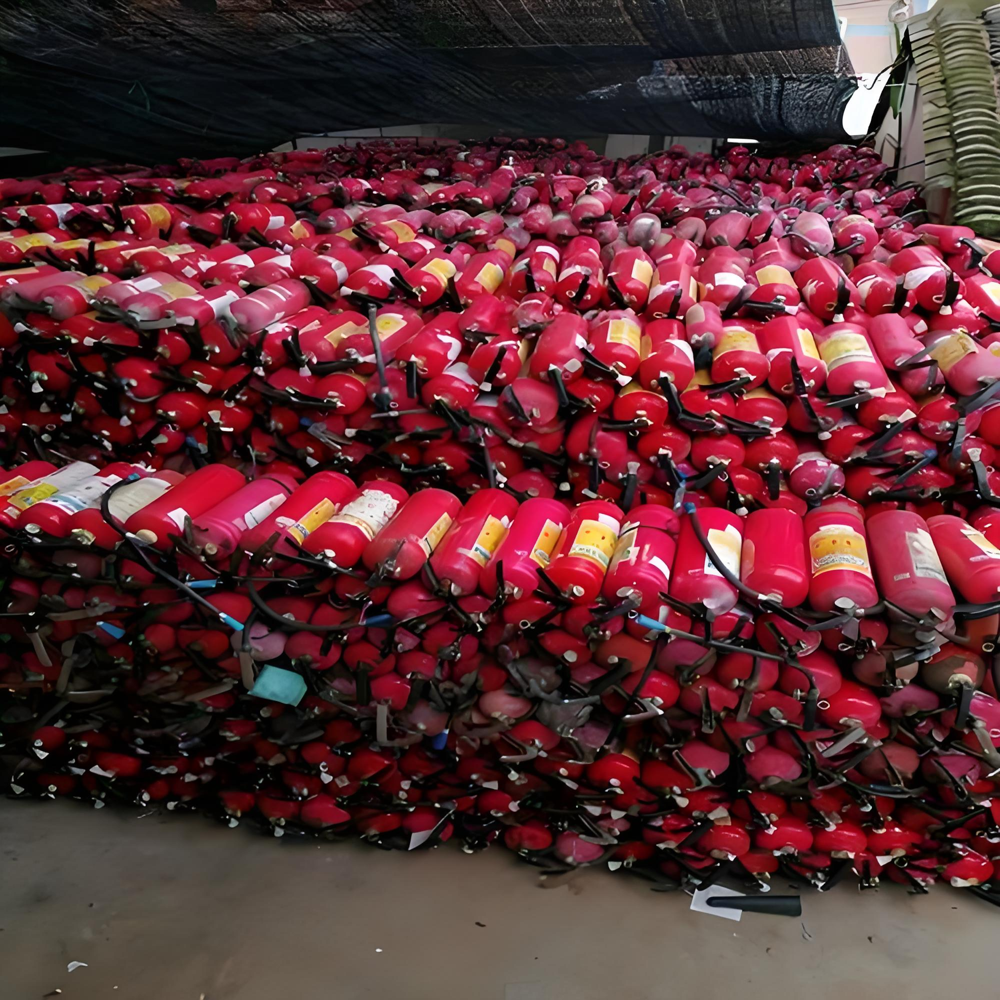

Complete Guide to Exporting Used Fire Extinguishers from China to the Middle East
If you're a fire-safety distributor, contractor, or industrial buyer in the UAE, Saudi Arabia, Qatar, Oman, or Bahrain looking to source cost-effective extinguishers, this guide walks you through everything you need to know — from GCC standards and certification to inspection checklists and shipping logistics.

Why Import Used Fire Extinguishers from China?
The Gulf Cooperation Council (GCC) region's construction boom — especially in Saudi Arabia's NEOM, Qatar's World Cup legacy projects, and the UAE's industrial expansion — has created sustained demand for fire-safety equipment at every price point. For non-critical applications such as construction sites, mining operations, large warehouses, and industrial yards, refurbished fire extinguishers offer 40-60% cost savings versus brand-new units while delivering the same fire-suppression performance after proper servicing.
China's refurbishment industry is mature: cylinders are hydrostatically tested, valves replaced, agents refilled, and units re-stamped. The end product is functionally equivalent to new for most B2B uses, which is why importers across the Middle East routinely source from China.
GCC Certification Requirements You Must Know
Different GCC countries have different conformity frameworks. Skipping any of these will get your shipment stuck at customs or rejected at destination.
🇦🇪 United Arab Emirates (UAE)
- MoIAT registration (formerly ESMA): All fire extinguishers must be registered with the Ministry of Industry and Advanced Technology. Importer is responsible for registration.
- UAE Fire and Life Safety Code of Practice: Must comply with local Civil Defense requirements.
- ECAS / EQM certification for the imported units.
🇸🇦 Saudi Arabia
- SASO IEC certification is mandatory for all portable fire extinguishers.
- SABER platform: Shipments must have a Certificate of Conformity (CoC) issued before goods arrive at Saudi ports.
- Saudi Civil Defense approval for installation in commercial buildings.
🇶🇦 Qatar, 🇴🇲 Oman, 🇧🇭 Bahrain, 🇰🇼 Kuwait
- Qatar (GAC): General Authority of Customs conformity certificate.
- Oman: DGSM (Directorate General of Standards and Metrology) approval.
- Bahrain: MOICT (Ministry of Industry, Commerce and Tourism).
- Kuwait: KOWS (Kuwait Office of Standards).
💡 Pro tip: Work with a freight forwarder experienced in GCC clearance who can handle SASO / MoIAT paperwork before the vessel departs China. This avoids costly demurrage charges at destination ports.
Inspection Checklist: How to Verify a Used Fire Extinguisher Before Shipment
Whether you inspect in person, send a third-party inspector, or rely on the supplier's QC report, every used fire extinguisher must pass these checks:
- Cylinder age stamp — Check the date of manufacture. Most jurisdictions require hydrostatic testing every 5-12 years (depending on cylinder type and country).
- Hydrostatic pressure test — Dry powder units are tested at typically 2.5 MPa (≈25 bar). CO2 units at 250 bar. The test certificate must be recent (within 12 months of shipment).
- Visual cylinder integrity — No deep rust, dents, weld cracks, or corrosion. The cylinder should be re-painted if surface rust exceeds 5% of the body.
- Valve condition — Replace or fully test. A leaking valve renders the unit useless regardless of internal pressure.
- Agent weight and quality — Dry powder should be dry and free-flowing (not clumped). Foam concentrate should be within shelf-life. CO2 weight matches nameplate ±5%.
- Hose, nozzle, gauge — All accessories intact and functional. Pressure gauge should read in the green zone.
- Re-stamping — Refurbishment date and inspector mark should be permanently stamped or engraved on the cylinder.
- Country-language labeling — For Middle East shipments, labels in Arabic + English are mandatory.
Shipping Logistics from China to the Middle East
Incoterms commonly used
Most Chinese exporters quote FOB (Free On Board, Chinese port) or CIF (Cost, Insurance, Freight, destination port). For new importers, CIF is simpler — the supplier arranges everything to your port. Once you're comfortable with the supplier, switching to FOB and using your own forwarder can save 8-15% on freight.
Port-to-port transit times
| From (China) | To (Middle East) | Transit |
|---|---|---|
| Shanghai / Ningbo | Jebel Ali (UAE) | 18-22 days |
| Shenzhen | Dammam (KSA) | 22-28 days |
| Shanghai | Hamad Port (Qatar) | 20-25 days |
| Ningbo | Sohar (Oman) | 20-25 days |
| Shanghai | Kuwait Shuwaikh | 25-30 days |
Container loading
A 20ft FCL typically holds 1,500 to 3,000 extinguishers depending on size. Dry powder 4kg units pack densest; wheeled 50kg units require specialized dunnage. Most Chinese suppliers can provide loading photos and videos, which is your proof of correct stowage for insurance.
How to Choose a Reliable Used Fire Extinguisher Exporter in China
Not all suppliers are equal. Before signing a purchase order, verify:
- Export license & years in business — At least 5 years exporting to GCC specifically.
- Refurbishment workshop — On-site hydrostatic testing equipment and pressure gauges.
- Inventory depth — Ready stock means faster lead times.
- Multilingual communication — English-speaking sales team, ideally Arabic as well.
- Third-party inspection — Willing to accept SGS, BV, or TUV inspection before shipment.
- Trade assurance — Alibaba Trade Assurance or escrow for first orders.
- References — Contactable references in your target country.
Common Mistakes to Avoid
- Skipping SASO/ESMA pre-shipment — Causes container detention at port.
- Paying 100% upfront — Always use 30% T/T deposit + 70% against copy of B/L, or Trade Assurance.
- Ignoring cylinder age — Units over 15 years old may be rejected outright.
- Wrong agent type — Dry powder for Class A/B/C fires, CO2 for electrical, foam for Class A/B. Matching the agent to the customer's actual fire risks matters.
- Not planning spare parts — Valves, gauges, and hoses wear out; ship a 5-10% spare parts allowance.
Frequently Asked Questions
Are used fire extinguishers legal to import to the Middle East?
Yes, used fire extinguishers can be imported to GCC countries, but they must pass local conformity assessments. UAE requires MoIAT registration, Saudi Arabia requires SASO IEC, and Qatar requires GAC certification. Refurbished units must meet the same performance and pressure-test standards as new units.
How do I verify a used fire extinguisher before shipment?
Check the manufacture date stamp, hydrostatic test pressure (typically 2.5 MPa for dry powder), visual integrity of the cylinder, valve condition, nozzle and hose condition, and powder/agent weight. Refurbished units should come with a third-party inspection report and pressure test certificate.
What is the minimum order quantity for export from China?
Most Chinese exporters require a 20ft FCL, which typically holds 1,500 to 3,000 extinguishers. Some suppliers accept LCL for trial orders of 200-500 units at higher per-unit freight cost.
What is the typical lead time from order to delivery?
Production and stock preparation takes 7-15 days. Sea freight to Jebel Ali (UAE) takes 18-22 days, to Dammam (KSA) 22-28 days. Total lead time from PO to port of destination is usually 30-45 days.
Why import used fire extinguishers instead of new ones?
Refurbished units typically cost 40-60% less than brand-new units while delivering the same fire suppression performance after proper pressure testing, powder replacement, and valve servicing. They are widely used in construction sites, mining operations, industrial warehouses, and as backup units.
Get a Quote from FireGuard Trading
FireGuard Trading has been exporting refurbished and new fire extinguishers from China to the Middle East for years. We hold stock of dry powder, foam, CO2, and water units across all common sizes (1kg to 50kg), and our workshop handles hydrostatic testing, valve replacement, and re-stamping in-house.
Send us your quantity, target country, and preferred port — we'll reply within 24 hours with FOB/CIF pricing, lead time, and certification options.